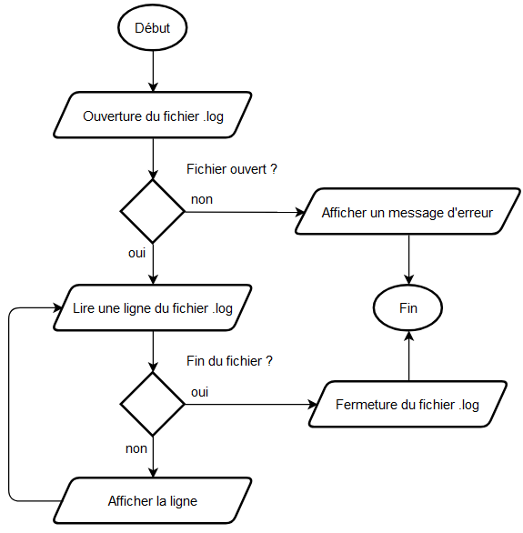

Les experts - Laval
Contexte
Mme H.GENNERO, résidant au 18 rue du Gué d'Orger à Laval, s'est présentée ce matin au poste de police où vous officez en tant que technicien de police scientifique.
Elle aurait aperçu son ex-compagnon, M. H.GRUBER, à plusieurs reprises à proximité de son domicile entre le 1er et le 25 novembre 2024. Sous le coup d'une injonction d'éloignement de 500 m, celui-ci est équipé d'un bracelet anti-rapprochement. Toutefois vos collègues du pôle national de télésurveillance et assistance n'ont pas relevé d'alerte sur cette période.
L'inspecteur J.MCLANE convoque M. H.GRUBER. Durant son interrogatoire, vous êtes mandaté pour analyser le fichier de journalisation des géolocalisations du bracelet de M. H.GRUBER. Ce fichier contient les traces NMEA régulièrement générées par le capteur GPS du bracelet entre le 1er et 25 novembre 2024.
Télécharger le fichier de journalisation
Votre mission
Créer un programme permettant d'analyser le fichier de journalisation fourni et de générer un fichier CSV (séparateur point-virgule (;)) contenant la liste des géolocalisations contrevenant à l'injonction d'éloignement de M. H. GRUBER.
Pour chaque géolocalisation, les informations suivantes devront être mentionnées :
- Date (
jj/mm/aaaa), - Heure (
hh:mm:ss), - Les coordonnées GPS en degrés décimaux (
DD.DDDDDD), - La distance à vol d'oiseau calculée en mètres (
m).
Analyse 🔍
Voici la liste des points à éclaircir avant de coder :
-
Lire un fichier CSV en C 📄
-
Lire un fichier texte ligne par ligne
-
Séparer les données de chaque ligne suivant un séparateur (token)
-
-
Décoder une trame NMEA 🛰️
-
Vérifier le checksum
-
Récupérer l'heure
-
Récupérer et convertir la latitude et la longitude en degrés décimaux
-
-
Calculer la date 📆
-
Calculer une distance à vol d'oiseau à partir de coordonnées GPS 🕊️
Calculer la distance entre deux points du globe 🌍 à partir de leurs coordonnées GPS 🛰️
La distance d entre deux points A et B sera calculée en utilisant la formule suivante :
\[\begin{split} &x=(longitudeB-longitudeA)\times\cos(\frac{latitudeA+latitudeB}{2}) \\ &y=latitudeB-latitudeA \\ &d=\sqrt{x^2+y^2}\times6371 \end{split}\]Notes :
-
Dans cette formule, les latitudes et longitudes sont exprimées en radians.
-
6371 correspond au rayon de la terre en km.
-
-
Ecrire un fichier CSV en C ✏️
Développement incrémental
Lire un fichier ligne par ligne
Coder le programme suivant :

Code en C
#include <stdio.h>
int main() {
char cheminFichierLog[] = "gruber_20241126.log",
ligne[100];
FILE * fichierLog = NULL;
// Ouverture du fichier
fichierLog = fopen(cheminFichierLog, "r");
// Vérification
if (fichierLog == NULL) {
puts("Erreur lors de l'ouverture en lecture du fichier de log");
return -1;
}
// Lecture ligne à ligne
while (fgets(ligne, 100, fichierLog) != NULL) {
printf(ligne);
}
// Fermeture du fichier
fclose(fichierLog);
return 0;
}
Transformer ce programme en fonction et la stocker dans une bibliothèque experts.h
Code en C
experts.h
#include <stdio.h>
#include <stdlib.h>
void lireFichier(char *);
void lireFichier(char * cheminFichier) {
char ligne[100];
FILE * fichier = NULL;
fichier = fopen(cheminFichier, "r");
if (fichier == NULL) {
puts("Erreur lors de l'ouverture en lecture du fichier de log");
exit(-1);
}
while (fgets(ligne, 100, fichier) != NULL) {
printf(ligne);
}
fclose(fichier);
}
experts.c
Vérifier le checksum d'une trame NMEA
Créer un programme qui isole, calcule et vérifie le checksum de la trame NMEA suivante :
Indice 1
S'inspirer des exemples fournis sur cette page.
Code en C
#include <stdio.h>
int main() {
char trame[] = "$GPGGA,080104.555,4804.656727,N,00047.507355,W,1,04,3.8,88.27,M,,,,,0000*3E";
char checksumCalcule = 0, checksumLu;
int i;
// Calcul du checksum
for (i = 1; trame[i] != '*'; i++) {
checksumCalcule ^= trame[i];
}
// Lecture du checksum
sscanf(trame + i + 1, "%x", &checksumLu);
// Comparaison
if (checksumCalcule == checksumLu) {
puts("OK !");
}
else {
puts("KO...");
}
return 0;
}
Transformer ce programme en fonction, la stocker dans une bibliothèque experts.h et tester avec d'autres trames.
Code en C
experts.h
#include <stdio.h>
#include <stdlib.h>
// [...]
int verifierChecksumNMEA(char *);
// [...]
int verifierChecksumNMEA(char * trame) {
char checksumCalcule = 0, checksumLu;
int i;
// Calcul du checksum
for (i = 1; trame[i] != '*'; i++) {
checksumCalcule ^= trame[i];
}
// Lecture du checksum
sscanf(trame + i + 1, "%x", &checksumLu);
// Comparaison
return checksumCalcule == checksumLu;
}
experts.c
Séparer les données de chaque ligne suivant un séparateur (token)
Créer un programme qui lit la ligne suivante, extrait chacune des valeurs dans une chaine de caractères et les affiche.
Indice 1
Utiliser un tableau de chaînes de caractères
Indice 2
Utiliser la fonction strtok()
Code en C
Solution avec un tableau de tableau qui récupère toutes les valeurs (quand on veut tout récupérer) :
#include <stdio.h>
#include <string.h>
int main() {
char ligne[] = "$GPGGA,080104.555,4804.656727,N,00047.507355,W,1,04,3.8,88.27,M,,,,,0000*3E";
char valeurs[12][13] = { "" };
int i = 0;
char * valeur = strtok (ligne, ",");
while (valeur != NULL) {
strcpy(valeurs[i++], valeur);
valeur = strtok (NULL, ",");
}
for (int i = 0; i < 12; i++) {
puts(valeurs[i]);
}
return 0;
}
Solution avec des variables différenciées (quand on ne veut récupérer que certaines valeurs)
#include <stdio.h>
#include <string.h>
int main() {
char ligne[] = "$GPGGA,080104.555,4804.656727,N,00047.507355,W,1,04,3.8,88.27,M,,,,,0000*3E";
char heure[11], latitude[12], longitude[13], ns[2], we[2];
int i = 0;
char * valeur = NULL;
valeur = strtok(ligne, ",");
for (int i = 1; valeur != NULL; i++) {
switch(i) {
case 2 : strcpy(heure, valeur); break;
case 3 : strcpy(latitude, valeur); break;
case 4 : strcpy(ns, valeur); break;
case 5 : strcpy(longitude, valeur); break;
case 6 : strcpy(we, valeur); break;
}
valeur = strtok(NULL, ",");
}
puts(heure);
puts(latitude);
puts(ns);
puts(longitude);
puts(we);
return 0;
}
Transformer ce programme en fonction, la stocker dans une bibliothèque experts.h et tester avec d'autres trames.
Code en C
experts.h
// [...]
#include <string.h>
// [...]
void extraireValeurs(char *, char *, char *, char *, char *, char*);
// [...]
void extraireValeurs(char * ligne, char * heure, char * latitude, char * ns, char * longitude, char* we) {
char * valeur = NULL;
valeur = strtok(ligne, ",");
for (int i = 1; valeur != NULL; i++) {
switch(i) {
case 2 : strcpy(heure, valeur); break;
case 3 : strcpy(latitude, valeur); break;
case 4 : strcpy(ns, valeur); break;
case 5 : strcpy(longitude, valeur); break;
case 6 : strcpy(we, valeur); break;
}
valeur = strtok(NULL, ",");
}
}
experts.c
#include "experts.h"
int main() {
char trame[] = "$GPGGA,080104.555,4804.656727,N,00047.507355,W,1,04,3.8,88.27,M,,,,,0000*3E";
char heureTxt[11], latitudeTxt[12], longitudeTxt[13], ns[2], we[2];
extraireValeurs(trame, heureTxt, latitudeTxt, ns, longitudeTxt, we);
puts(heureTxt);
puts(latitudeTxt);
puts(ns);
puts(longitudeTxt);
puts(we);
return 0;
}
Convertir les données lues
Créer une fonction pour chacune des conversions suivantes :
-
Passer d'une heure au format
hhmmss.sssau formathh:mm:ss -
Passer d'une coordonnée au format DDDMM.MMMMMM + N/S ou E/W au format (-)DDD.DDDDDD
Code en C
float convertirCoordonnees(char * coordonnee, char * direction) { char * point = NULL, degres[4] = ""; float resultat; // Recupération des degrés point = strchr(coordonnee, '.'); strncpy(degres, coordonnee, point - coordonnee - 2); resultat = atof(degres); // Extraction des minutes et conversion en degrés resultat += atof(point - 2) / 60; // Gestion de la direction if (*direction == 'S' || *direction == 'W') { resultat *= -1; } return resultat; }
Calculer une distance à vol d'oiseau
Créer une fonction qui calcule la distance à vol d'oiseau entre deux points à partir de leurs coordonnées GPS (en degrés décimaux).
Indice
J'ai l'impression qu'on se répète...
Code en C
// Bibliothèque pour obtenir PI, cos, pow et sqrt
#define _USE_MATH_DEFINES
#include <math.h>
float convertirDegresEnRadians(float);
float calculerDistance(float, float, float, float);
int main() {
printf("%f\n", calculerDistance(48.07429936102162, -0.7680080793209888, 48.07352056412836, -0.7723579441783978));
// 334,87m d'après Google Maps
return 0;
}
float convertirDegresEnRadians(float angle) {
return angle * M_PI / 180;
}
float calculerDistance(float latA, float lngA, float latB, float lngB) {
float distance = 0;
// Conversion en radian
latA = convertirDegresEnRadians(latA);
lngA = convertirDegresEnRadians(lngA);
latB = convertirDegresEnRadians(latB);
lngB = convertirDegresEnRadians(lngB);
// Calcul de la distance
return sqrt(pow((lngB - lngA) * cos((latA + latB) / 2), 2) + pow(latB - latA, 2)) * 6371 * 1000;
}
Première intégration
A partir de la bibliothèque experts.h suivante, créer un programme qui lit le fichier gruber_20241126.log et affiche pour les trames valides dont la distance avec le domicile de Mme H.GENNERO est inférieure à 500 m :
- Date (
jj/mm/aaaa), - Heure (
hh:mm:ss), - Les coordonnées GPS en degrés décimaux (
DD.DDDDDD), - La distance à vol d'oiseau calculée en mètres (
m).
Télécharger la bibliothèque experts.h
Première version
experts.h
On choisit de traiter le fichier ligne à ligne, tout le traitement va donc être réalisé dans la fonction lireFichier.
void lireFichier(char * cheminFichier) {
char ligne[100], nmeaHeure[10], nmeaLatitude[12], nmeaNS[2], nmeaLongitude[13], nmeaWS[2], heure[9], date[] = "01/11/2024";
float latitude, longitude, distance;
int heureCourante, heurePrecedente = 0;
FILE * fichier = NULL;
fichier = fopen(cheminFichier, "r");
if (fichier == NULL) {
puts("Erreur lors de l'ouverture en lecture du fichier de log");
exit(-1);
}
// Pour chaque ligne...
while (fgets(ligne, 100, fichier) != NULL) {
// ...on vérifie le checksum...
if (verifierChecksumNMEA(ligne)) {
// ...on extrait les valeurs...
extraireValeurs(ligne, nmeaHeure, nmeaLatitude, nmeaNS, nmeaLongitude, nmeaWS);
// ...convertit l'heure en texte...
convertirHeure(nmeaHeure, heure);
// ...puis en entier pour voir si on a changé de journée et gérer la date...
heureCourante = extraireHeure(heure);
if (heureCourante < heurePrecedente) {
incrementerDate(date);
}
heurePrecedente = heureCourante;
// ...puis on convertit les coordonnées...
latitude = convertirCoordonnees(nmeaLatitude, nmeaNS);
longitude = convertirCoordonnees(nmeaLongitude, nmeaWS);
// ...pour calculer la distance...
distance = calculerDistance(48.06410268512942, -0.7801647985752476, latitude, longitude);
// ...pour enfin vérifier si elle est inférieure à 500 m...
if (distance < 500) {
// finalement on affiche les informations demandées
printf("%s %s (%f, %f) %f m\n", date, heure, latitude, longitude, distance);
}
}
}
fclose(fichier);
}
experts.c
La fonction principale se résume à un appel à la fonction lireFichier.
Suite et fin
Générer un fichier texte
Réaliser les exercices suivants :
-
Créer une fonction qui crée un fichier
exo1.txtet le remplit en une seule fois avec une phrase passée en paramètre.La tester avec la phrase :
Le courage n'est pas l'absence de peur, mais la capacité de vaincre ce qui fait peur.Solution
#include <stdio.h> #include <stdlib.h> void exo1(char * chaine) { FILE * fichier = NULL; fichier = fopen("exo1.txt", "w"); if (fichier == NULL) { puts("Exo 1 - Erreur lors de l'ouverture."); exit(-1); } fputs(chaine, fichier); fclose(fichier); } int main() { exo1("Le courage n'est pas l'absence de peur, mais la capacité de vaincre ce qui fait peur."); return 0; } -
Créer une fonction qui crée un fichier
exo2.txtet le remplit 5 caractères par 5 caractères avec une phrase passée en paramètre.La tester avec la phrase :
Quand on veut on peut, quand on peut on doit.Solution
#include <stdio.h> #include <stdlib.h> #include <string.h> void exo2(char * chaine) { FILE * fichier = NULL; int i = 0; fichier = fopen("exo2.txt", "w"); if (fichier == NULL) { puts("Exo 2 - Erreur lors de l'ouverture."); exit(-1); } // Par soucis de généricité, pour ne pas dépasser la longueur // de la chaîne pour les chaines dont la taille n'est pas un // multiple de 5, on s'arrête 5 caractères avant la fin. for (i = 0; i < strlen(chaine) - 5; i += 5) { fwrite(chaine + i, sizeof(char), 5, fichier); } // On écrit finalement le reliquat (de 1 à 5 caractères) fwrite(chaine + i, sizeof(char), strlen(chaine) - i, fichier); fclose(fichier); } int main() { exo2("Quand on veut o123n peut, quand on peut on doit."); return 0; } -
Créer une fonction qui crée un fichier
exo3.txtet le remplit caractère par caractère avec une phrase passée en paramètre.La tester avec le texte :
Entre : Ce que je pense, Ce que je veux dire, Ce que je crois dire, Ce que je dis, Ce que vous avez envie d'entendre, Ce que vous entendez, Ce que vous comprenez... Il y a dix possibilités qu'on ait des difficultés à communiquer. Mais essayons quand même... -
Créer une fonction qui crée un fichier
exo4.csv(séparateur : tabulation) et le remplit avec les valeurs de 3 tableaux passées en paramètres.La tester avec les tableaux suivants :
[ 1, 2, 3, 4, 5, 6, 7, 8, 9, 10 ] [ 1.2, 3.4, 5.6, 6.7, 8.9, 0.1, 2.3, 4.5, 6.7, 8.9 ] [ Archibald, Tryphon, Piotr, Bianca, Tchang, Abdallah, Roberto, Séraphin, Allan, Oliveira ]